Abstract
Sergei Prokudin-Gorskii captured scenes through red, green, and blue filters on glass plates long before color printing was practical. The digitized negatives preserve those three monochrome exposures as a vertical stack. This work reconstructs color photographs by splitting the stack, estimating the channel displacement, and recombining the aligned channels into a single RGB image.
The implementation studies a progression of alignment objectives: raw pixel distance, normalized cross-correlation, structural similarity, cropped central-window scoring, pyramid search for large displacements, and Sobel edge features for cases where channel intensities differ. The goal is not just to colorize, but to understand why some metrics fail and what preprocessing makes the optimization more stable.
Plate Model and Alignment Objective
Each glass plate image is divided into three equal-height images. I use the blue channel as the fixed reference and search for translations of the green and red channels. If B(x,y) is the reference and R(x,y) is a moving channel, a candidate displacement (u,v) is evaluated on the overlapping cropped region.
I tested Euclidean distance, sum of squared differences, normalized cross-correlation, and structural similarity. Normalized cross-correlation was the most consistent because it normalizes away some brightness scale differences between channels. For small images, the algorithm performs an exhaustive search over a fixed displacement window and returns the shift with the highest score.
The borders of the scanned plates contain high-contrast artifacts that can dominate the score even though they are not useful scene content. To reduce this, I crop the outer region during scoring and use a central window for the comparison. This made the objective focus on shared structure rather than plate edges.
Multiscale Search
Large scans can require displacements far beyond a small fixed search window. A full-resolution exhaustive search would be slow and brittle, so I used a coarse-to-fine image pyramid. At the coarsest scale, the algorithm searches broadly on a small image. The resulting displacement is doubled when moving to the next finer level, then locally refined.
This is computationally useful because the coarse level captures large motion cheaply, while the fine levels only need local corrections. It also makes the implementation less dependent on a hand-tuned full-resolution search radius.
Edge-Domain Alignment
Some plates, especially the Emir image, are difficult because the same material can appear with very different intensity in different color filters. A raw intensity comparison can then prefer the wrong shift. To address this, I experimented with Sobel filtering before alignment. The Sobel operators approximate horizontal and vertical derivatives:
The edge magnitude keeps boundaries and suppresses much of the absolute brightness variation. After transforming channels into edge maps, the same NCC-based search can align structure rather than raw tone.
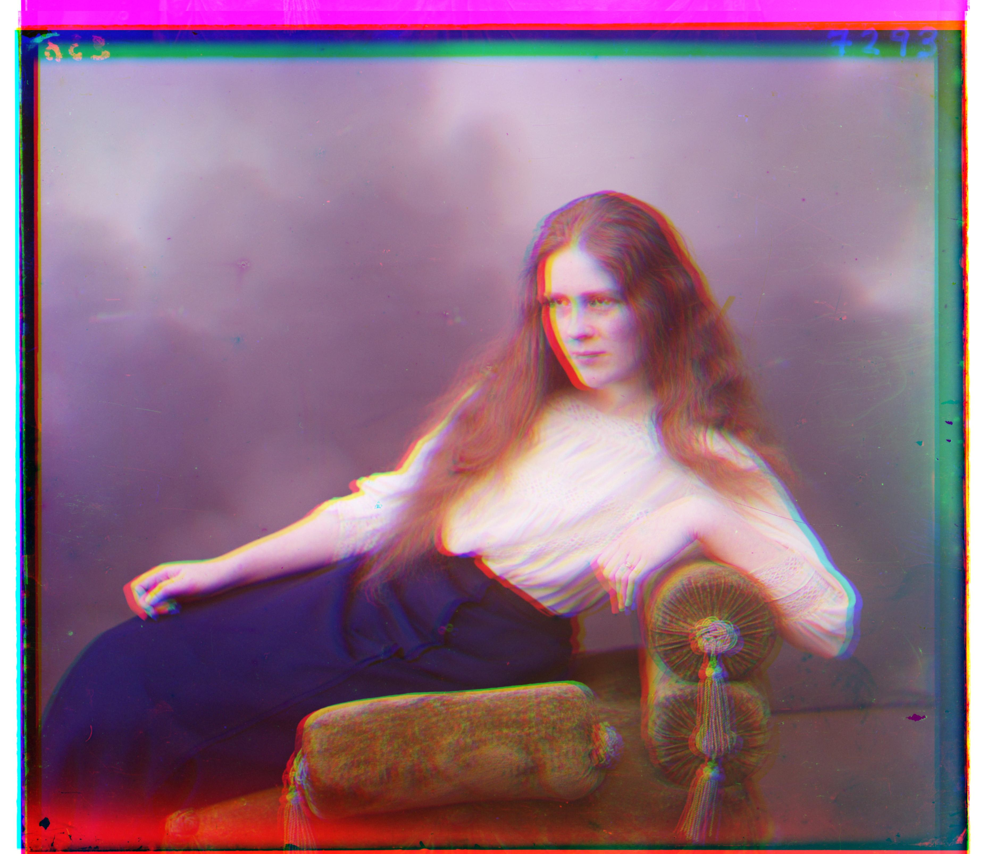

Named Results
Small Plates: Direct Exhaustive Search
The smaller plates fit within a modest search window, so direct exhaustive alignment is sufficient. The final displacements were recorded with each output in the original experiment, and the visible result is clean alignment without needing a pyramid.


Large Plates: Pyramid Alignment
High-resolution scans require larger shifts. Pyramid search aligned the red and green channels while keeping runtime manageable. The examples show that even images with substantial channel displacement can be reconstructed when the scoring window avoids border artifacts.
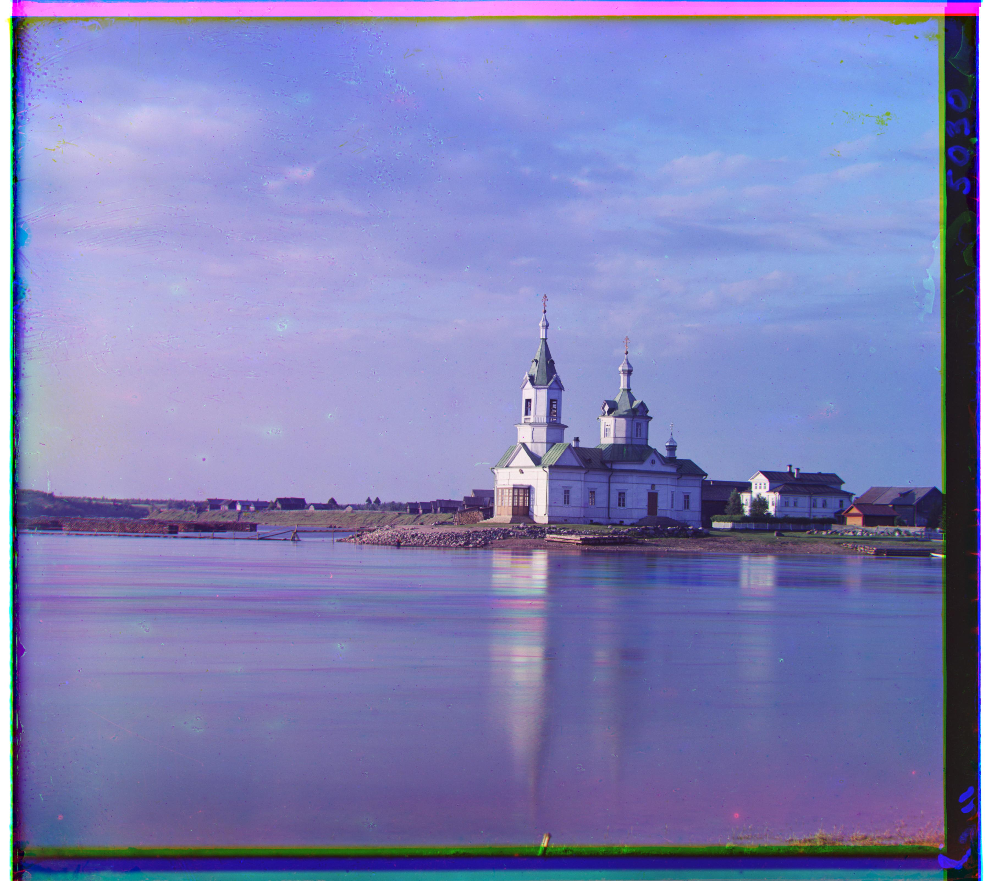
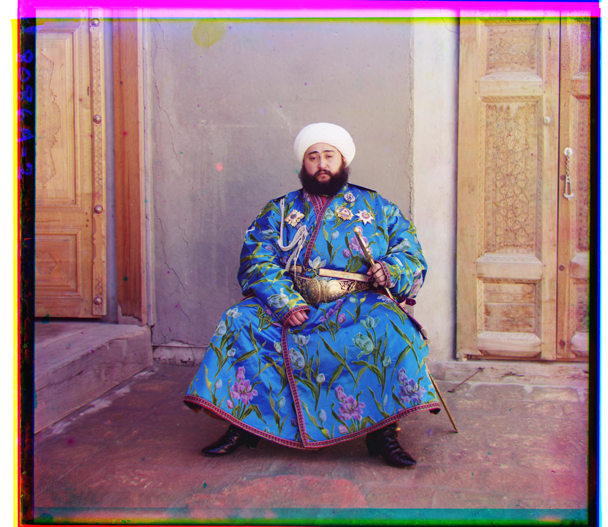

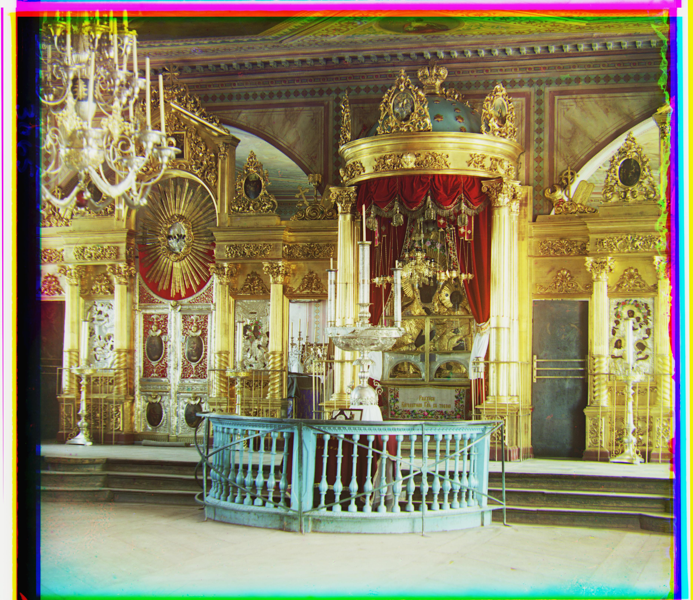

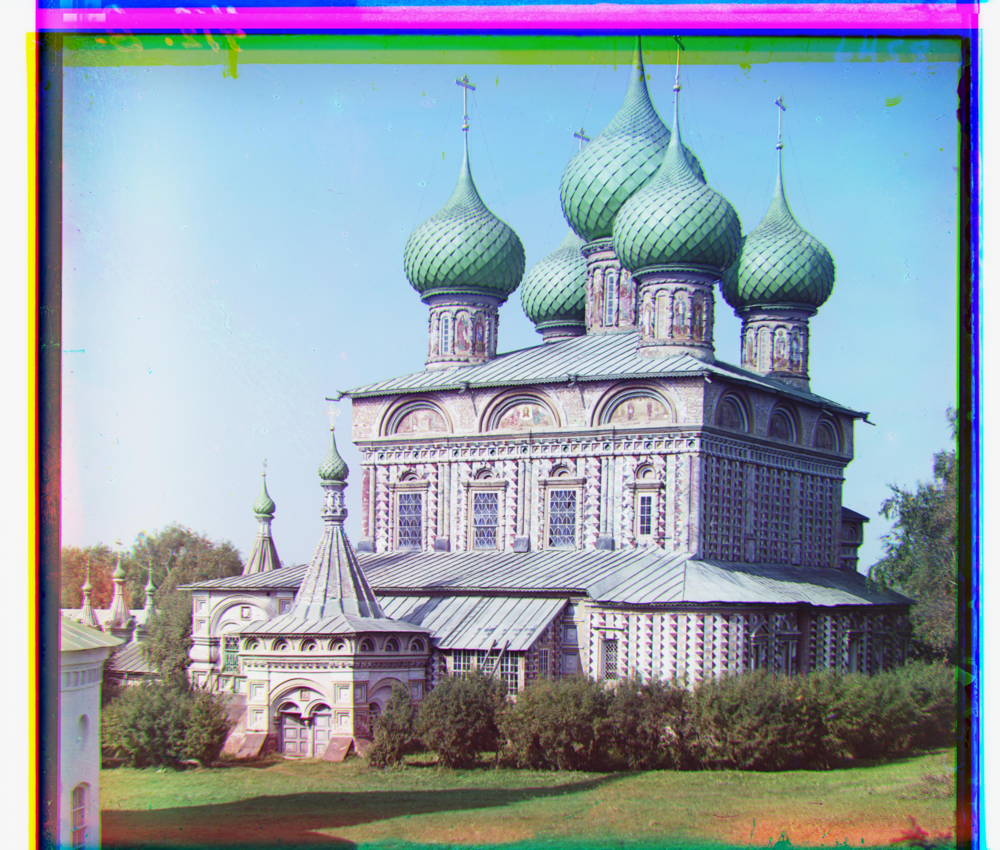

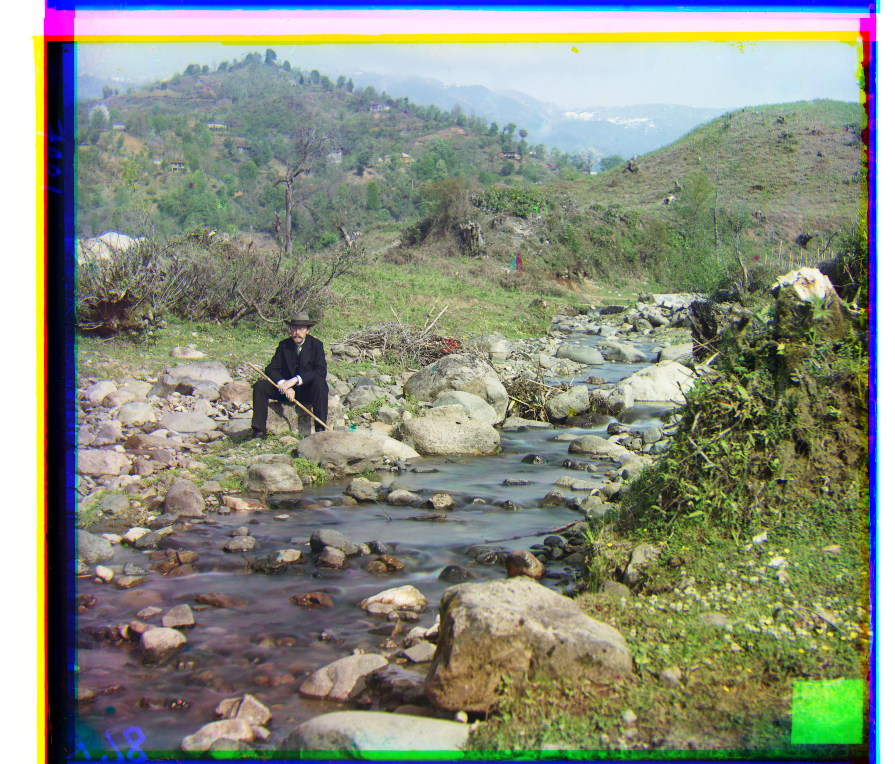
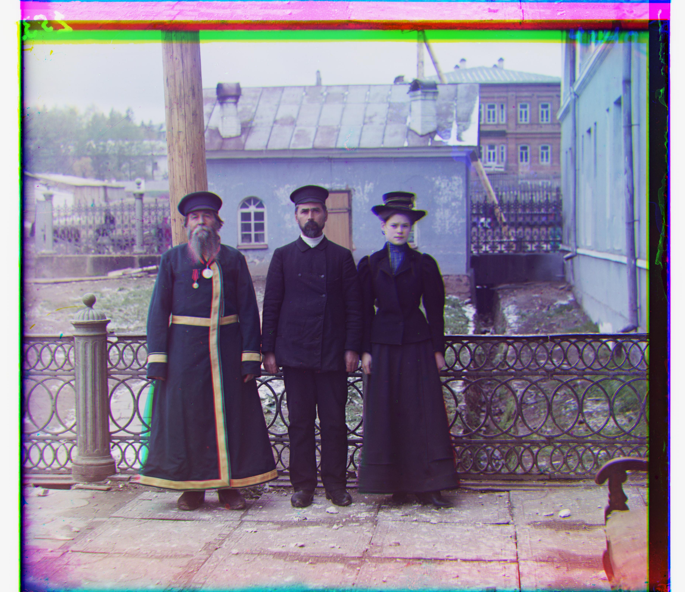
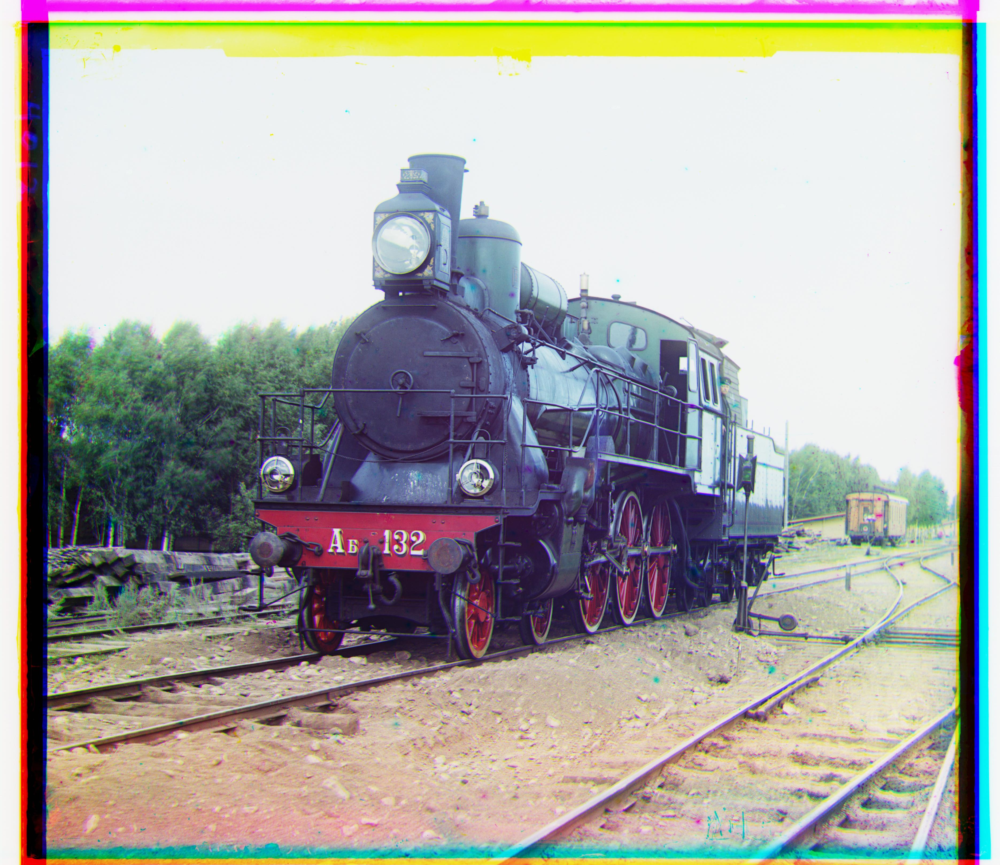
Additional Historical Plates
I also tested the pipeline on additional images from the collection. These examples helped check that the alignment strategy generalized beyond the provided set.
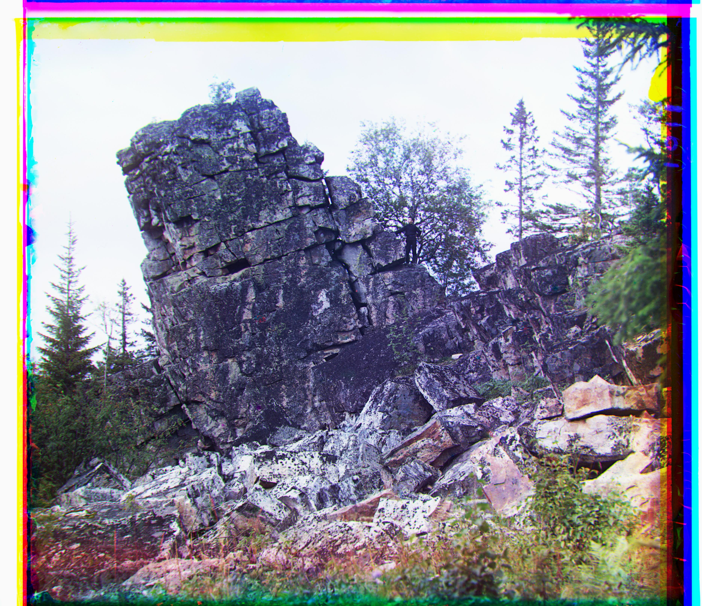
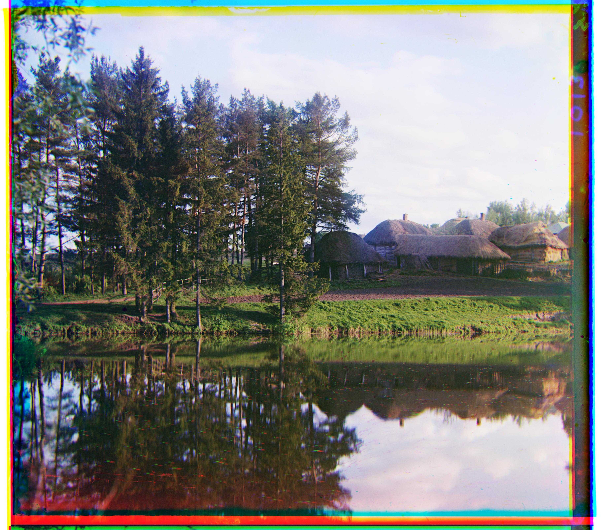
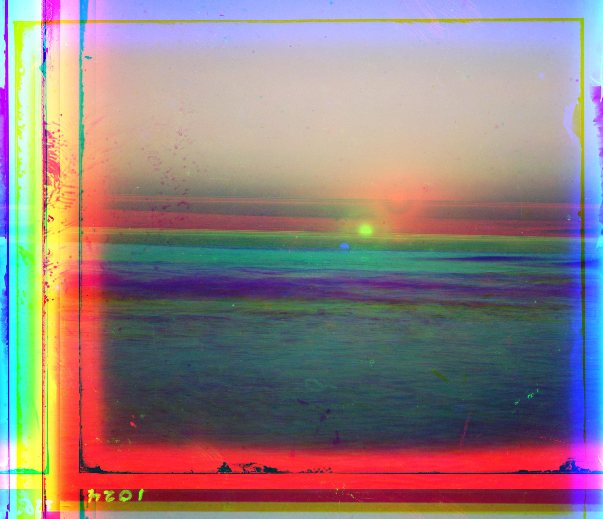
Technical Takeaways and Future Work
The most important design choice was not simply the similarity metric, but the pixels used by the metric. Cropping, central-window scoring, and edge preprocessing all reduce the chance that the optimizer follows scanner artifacts or color-channel brightness differences.
Future improvements would include automatic border detection after alignment, contrast normalization before scoring, and a feature-based fallback for plates where derivative structure is still ambiguous.